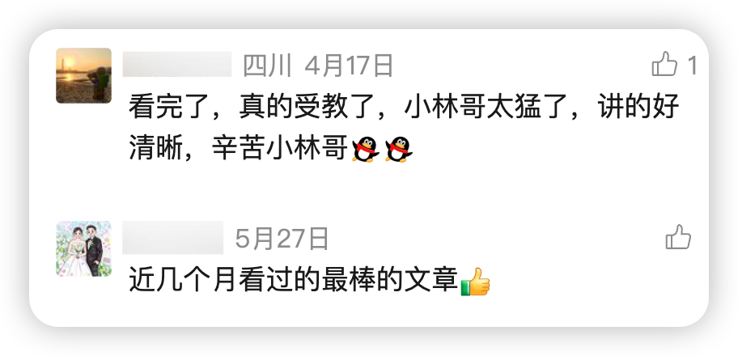
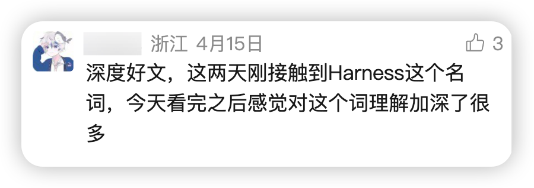

大家好，我是小林。
讲真，AI 圈造新词的速度，已经超过我们学习的速度了。
前年说会用 AI 的关键是 prompt engineering，赶紧学；去年又说 prompt 过时了，现在流行 context engineering，行，接着学；今年 3 月冒出来一个 harness engineering，估计还有很多同学没整明白 harness 到底是什么。
其实 harness engineering，我之前就写过一篇： 万字长文图解 Harness 工程，还没看过的同学，可以补补课。当时这篇文章收获了很多读者的好评。


先插个题外话，我昨天花了一天时间，把在公众号写过的《图解Agent》文章，都同步到了网站：https://xiaolinnote.com，后续的新文章也会同步到这个网站，而且网站还有高频「大模型面试题」可以看哦。

所以，你们可以收藏好🔗（https://xiaolinnote.com），方便以后复习。
回归正题。
现在这才 6 月，又来了，这次的新词叫 loop engineering。
讲真，我第一反应是翻白眼：又来？
是不是把 engineering 前面换个单词就能造一个赛道？
但我把来龙去脉扒了一圈之后，我收回了白眼。

这个词不是哪个营销号造的。
点火的是 Peter Steinberger，开源 agent 项目 OpenClaw 的作者，他 6 月 7 日发了条推文，说：「每月例行提醒：你不该再给 coding agent 打 prompt 了。你该去设计那个给 agent 打 prompt 的 loop。」

给概念定名写长文的是 Addy Osmani，Google Cloud 的 AI 总监：

而几天前，Claude Code 创始人 Boris Cherny 在访谈里说了一句更猛的话，等于提前给这个概念背了书：
「我已经不 prompt Claude 了。是 loop 在运行着 prompt Claude、决定做什么。我的工作是写 loop。」
一个造工具的、一个定方法论的、一个每天泡在一线的产品创始人，三个人在同一周说了同一件事。
这种程度的共振，值得认真看一看。

这篇文章我整理成 6 个问题：
Q1：四个 engineering，到底都在 engineering 什么？ Q2：Loop Engineering 到底是什么？ Q3：一个 loop 由什么组成？ Q4：拼起来之后，一个真实的 loop 长什么样？ Q5：工具已经追上来了，现在就能搭 Q6：三盆冷水：loop 越好用，这三个问题越尖锐
我们一个一个来说。
Q1：四个 engineering，到底都在 engineering 什么？
在讲 loop 之前，得先把欠的账还了：prompt、context、harness 这三个词，很多人到现在也只是「听过」，没真正分清。
先问一个问题：为什么这些词会一个接一个地冒出来？是 AI 圈闲得慌吗？
还真不是。每个新词的出现，背后都是同一件事：上一个瓶颈被解决了，新的瓶颈暴露出来了。把这条线从头捋一遍，四个词一下就清楚了。
时间回到 2023 年。那时候模型只会一问一答，你问得好不好，直接决定答得好不好。
于是大家研究话术：角色扮演、思维链、少样本示例。
这就是提示词工程（Prompt Engineering），本质是跟一个聪明但一根筋的实习生说话的技巧，同一件事换个问法，效果天差地别。这个阶段的瓶颈，卡在「怎么说」。
但话术的红利吃不了太久。到了 2025 年，模型变强了，也开始当 agent 干活了，光会说话不够用了。
你让它改一个 bug，它写得再漂亮也没用，因为它没看过你的代码、不知道你的规范、不了解之前的讨论。话术解决不了「巧妇难为无米之炊」。
于是瓶颈从「怎么问」移到了「喂什么」：把对的代码、文档、工具、历史记忆，在对的时机塞进上下文窗口。这就是上下文工程（Context Engineering），当时 Shopify 的 CEO 和 Karpathy 先后带火了这个说法。
类比一下：你不再纠结怎么跟实习生说话，而是开始给他准备一桌整理好的资料。

材料的问题刚解决，新的短板马上接棒。2026 年初，模型已经能连续干几个小时的活了，这时候卡脖子的不再是材料，而是它干活的「环境」跟不上。
它需要工具去执行命令、需要权限边界防止误伤、需要沙箱安全地试错、需要派出子 agent 分头探索、需要上下文管理机制防止越干越糊涂。这一整套围绕模型搭建的运行装备，业内叫 harness（直译是马具，可以理解成 agent 的「驾驶舱」）。
今年 3 月前后，Anthropic、OpenAI、LangChain 几家几乎同时发文章讨论这件事，还有人给出了一个很好记的公式：Agent = 模型 + harness。同一个模型，驾驶舱不一样，能力可以差出几倍。

话术、材料、驾驶舱，三道坎都迈过去了。那最后剩下的瓶颈是谁？
你自己。
模型在等你布置任务，harness 在等你启动，材料在等你投喂。整条流水线上，唯一还需要人肉驱动的环节，就是你坐在屏幕前敲下一条 prompt。你睡觉，它就停工。

loop engineering 瞄准的就是这最后一环：设计一个系统，让「下一次回车」不再由你来按。

看出规律了吗？模型每变强一截，瓶颈就往外移一层：从你说的那句话，到你给的那堆材料，到它干活的环境，最后落到你本人身上。
所以这些词不是营销轮换，是瓶颈迁移的路标。
四个 engineering，本质是同一场瓶颈迁移：最后一个瓶颈，是坐在键盘前的你。
Q2：Loop Engineering 到底是什么？
铺垫完了，现在正面回答：loop engineering 是什么？
开头 Steinberger（OpenClaw 的作者） 那条 800 多万浏览的推文，只负责把口号喊响：别再 prompt 了，去设计 loop。但口号当不了定义。
紧接着，Osmani（Google Cloud 的 AI 总监） 的长文给出了正式定义：
「Loop engineering 就是把『亲自给 agent 写 prompt 的那个你』替换掉。你转而去设计那个代替你做这件事的系统。」
他还补了一句对 loop 本身的解释：loop 可以理解为一个递归式的目标，你定义一个目的，AI 持续迭代，直到完成。
说人话就是：过去两年，你跟 coding agent 的协作方式是回合制的，你写一条 prompt，读它的输出，再写下一条。agent 是工具，你全程握着它，一回合都不能松手。
loop engineering 说的是，松手吧。你把「发现任务、布置任务、检查结果、决定下一步」这套流程设计成一个能自己运转的循环，然后让循环去握着 agent。

打个比方。以前你是客服热线的接线员，每个电话都要你亲自接、亲自答；现在你升级成了设计工单系统的人：电话怎么分流、哪类问题转给谁、办结标准是什么、办不了的怎么升级到你，规则定好，系统自己转。
你没有离开这家公司，但你的岗位变了。
这也是 Claude Code 创始人说的那句「我的工作是写 loop」的真实含义。注意，他没说工作变轻松了。这句话真正的重点是：工作没有变容易，是杠杆的支点移动了。
什么叫支点移动？以前你写一条好 prompt，收益是「这一次回答变好」；现在你设计一个好 loop，收益是「之后每一次循环都变好」。投入从消耗品变成了资产。
但反过来，设计 loop 也比写 prompt 难得多：你要考虑触发、并行、验证、状态、止损，相当于从「说一句话」升级到「设计一套制度」。杠杆变长了，对握杠杆的人要求也变高了。

loop engineering 一句话：你不再是 prompt 的作者，你是 prompt 生产系统的设计师。
Q3：一个 loop 由什么组成？
概念清楚了，落地的问题马上来了：一个能自己运转的 loop，到底需要哪几样东西？
把那些真正跑起来的 loop 拆开看，你会发现零件出奇地一致：五大件，外加一个记东西的地方。我们一件一件过，每一件都对应一个「不装它就会翻车」的具体场景。
第一件：自动化，loop 的心跳
先想一个问题：你写了一个很完美的工作流脚本，但每次都要你手动启动，它算 loop 吗？
不算。自动化才让 loop 成为真正的 loop，否则它只是一个你跑过一次的任务。
所以第一件就是定时或事件触发：每天早上自动扫一遍 CI 失败、每次 PR 合并自动跑一轮检查。心跳有了，循环才算活着。

第二件：worktree，让并行不变成打架
loop 一旦跑起来，经常是几个 agent 同时干活。这时候你会撞上一个特别具体的麻烦：两个 agent 同时改同一个文件。
就像两个工程师挤在同一台电脑上改同一行代码，还互相不打招呼。
解法是 git 的 worktree 机制：给每个 agent 一个独立的工作目录和独立分支，共享同一份仓库历史，但物理上互不干扰。各干各的，最后各开各的 PR。

第三件：skill，治好 agent 的「金鱼记忆」
agent 有个天生缺陷：每个会话都是冷启动，你项目里的规范、约定、坑，它一概不知。
于是你不得不像对金鱼一样，每个会话把项目重新解释一遍。更要命的是，你没解释到的地方，它不会空着，它会用一个自信的猜测填上。
skill 就是把这些项目知识写成文件放在仓库里，让 agent 该用的时候自己读。这件事对 loop 的意义比对单次会话大得多：没有 skill，loop 每个周期都从零重新推导你的项目；有了 skill，知识是复利的。

第四件：connector，让 loop 摸到真实世界
一个只能看见文件系统的 loop，撑死了算半个 loop。
真实的工作流不止于代码：要读 issue 工单、查监控、发消息、开 PR。connector（基于 MCP 协议的连接器）就是把这些外部系统接进来的桥。
接上之后的差别有多大？一个 agent 只会告诉你「修复方案在这里」，而一个完整的 loop 会自己开好 PR、关联好工单，等 CI 变绿之后自己去频道里通知人。

第五件：sub-agent，写的人和查的人必须分开
五大件里最有用的结构性设计，我认为遥遥领先的一条，是这个：把写代码的 agent 和检查代码的 agent 分开。
为什么？理由只有一句话，但谁听谁服：写代码的那个模型，给自己的作业打分时，实在太手下留情了。
让 A 出方案，让一个干净上下文的 B 来挑刺，B 没有「希望自己是对的」的包袱，挑出来的问题才是真问题。

第六件：记忆，loop 的命根子
最后这件听起来最不起眼，但它是整个 loop 的命根子。
问题是这样的：模型在两次运行之间会忘掉一切。今天的循环干了什么、哪些做完了、哪些卡住了，明天的循环一概不知道。
解法朴素到让人意外：把记忆放在磁盘上，而不是上下文里。一个 markdown 文件、一个任务看板，什么都行，只要它活在单次对话之外，记录着「做完了什么、下一步是什么」。
这件事，Osmani 的博客里留了一句很妙的总结：
「agent 会忘，但 repo 不会。」


五大件让 loop 转得起来，磁盘上的记忆让它第二天还接得上。
Q4：拼起来之后，一个真实的 loop 长什么样？
零件都认识了，该看整车了。
Osmani 在文章里给了一个他自己在用的 loop，我把流程完整搬过来。这个 loop 的任务是：每天早上自动把项目里值得修的问题找出来、修好、提交审核。
第一步，每天早晨，自动化准时触发，调用一个负责分诊的 skill。
第二步，这个 skill 去读昨天的 CI 失败记录、还没关闭的 issue、最近的提交，把「哪些问题值得处理」写进一个状态文件。
第三步，对每一个值得做的问题，开一个隔离的 worktree，派一个 sub-agent 进去起草修复。
第四步，第二个 sub-agent 登场，对照项目的 skill 规范和现有测试，把那份草稿审一遍。
第五步，审过了，connector 自动开 PR、更新对应的工单。
第六步，loop 搞不定的问题，不硬来，丢进一个待办收件箱，等真人来看。
第七步，所有经过都写回状态文件。明天早上的循环从今天停下的地方继续。


流程走完，你品一品这里面最关键的一件事：整个过程里，你只设计了一次，中间的任何一步，你都没有写过 prompt。
这就是 Steinberger 那句口号的落地版本。你的活从「每一步都出现」变成了「只在两个地方出现」：设计循环的时候，和收件箱里有东西的时候。

一个好 loop 的标志：你只在设计时出现一次，之后只在收件箱前出现。
Q5：工具已经追上来了，现在就能搭
听到这里你可能会想：道理是好道理，但搭这么一套系统，工程量不小吧？
这正是这次概念能火起来的底气所在。这里有一个很关键的时间差：一年前，搭一个 loop 意味着写一堆只有你自己看得懂、还得永远自己维护的 bash 脚本；而现在，五大件全部内置在主流产品里。
我把两家头部产品的部件整理成一张对照表：
/loop、hooks | |||
git worktree | |||

这张表里还藏着一个值得单独拎出来的细节：两家都有一个 /goal 类的能力，它和普通定时循环的区别很微妙，但很重要。
普通的循环是按节奏重复跑：每小时跑一次，跑完就完了，对不对另说。而 /goal 是跑到你写的条件为真才停，比如「目录下所有测试通过且 lint 干净」。更妙的是，每一轮结束后，由一个独立的模型来判断条件是否达成。
发现没有？这就是上一节说的「写的人和查的人分开」，只不过这次用在了「什么时候算干完了」这个停止条件上。连「我做完了」这句话，都不让干活的那个 agent 自己说。

实操：30 秒搭出你的第一个 loop
光说不练假把式，我们拿一个所有人都烦过的场景，真刀真枪走一遍。
这个场景是：你提了个 PR，然后开始等 CI。挂了，切回去看日志、改、推送，再等。一下午切了八次窗口，正经活没干多少。
在 Claude Code 里，这件事用一条 /loop 命令就能交出去：
/loop 10m 检查当前分支 PR 的 CI 状态：有失败的检查就读日志、修复、推送；
全部变绿后停下来，给我一句话总结改了什么
把这条命令拆开看，麻雀虽小，loop 的骨架是全的。
10m 是心跳：每 10 分钟自动醒来跑一轮，不用你按回车。中间那段是任务：每一轮干什么。最后一句是停止条件加汇报：什么时候算完、完了怎么交差。
敲下去之后你就可以去干别的了。CI 挂了它自己修，修完自己推，全绿了它叫你。刚才那个来回切窗口的下午，被压缩成了「最后看一眼总结」。

还有个更省心的玩法：把间隔省掉，直接 /loop 加任务。这时候节奏由模型自己定，它会根据「CI 一般要跑多久」来决定多久看一次，不会傻乎乎地一分钟刷一次。
两个使用边界也交代清楚，免得你回头骂我。
第一，/loop 活在当前会话里，适合「今天盯着这件事」的轮询；你关掉电脑它就停了。想要那种睡觉时也在跑的 loop，要用计划任务或者云端的 routines，让它脱离你的机器运行。
第二，回头对照 Q3 的五大件你会发现，这个最小 loop 只有心跳、任务和停止条件，没有 worktree、没有写查分离的 sub-agent。这不是缺陷，是起点：先让最小的循环转起来，哪天你觉得「它自己改的代码我不放心」，再把检查的 sub-agent 加上；觉得「想同时盯三个 PR」，再上 worktree。部件是一件一件长出来的，不是一天配齐的。

而对照表还说明了一件更大的事：两家产品的部件几乎一一对应，loop 的设计正在变得工具无关。部件是同样的部件，差的只是商标。
这意味着什么？意味着「选 Codex 还是选 Claude Code」这种争论的重要性在下降。loop 的设计图纸是你的资产，画好了，放在哪家的产品上都能转。值得积累的是图纸，不是对某家工具的肌肉记忆。

门槛已经从「自己造零件」降到了「学会拼装」，剩下的问题只是你想让 loop 替你做什么。
Q6：三盆冷水：loop 越好用，这三个问题越尖锐
文章到这里都挺振奋的，该泼冷水了。
有意思的是，泼得最狠的不是哪个反对派，恰恰是给概念定名的 Osmani 本人，他在博客里直说：「现在还早，我是持怀疑态度的。」
冷水的核心是一句话：loop 改变了工作，但没有把你从工作中删除<[Truncated]